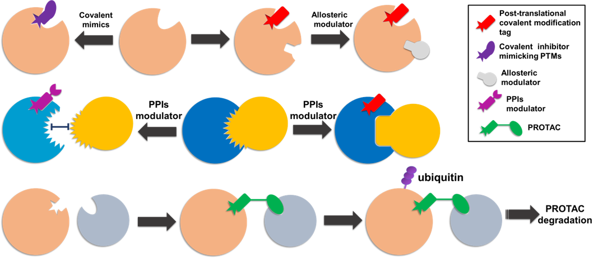

Modern drug design aims to discover novel lead compounds with attractable chemical profiles to enable further exploration of the intersection of chemical space and biological space. However, the intersection is one of the most challenging tasks, as chemical space is almost infinity and continuous, whereas the biological space is very limited and discrete. Herein, we present a new direction leveraging posttranslational modification (PTM) protein isoforms target space to inspire drug design termed as “Post‐translational Modification Inspired Drug Design (PIDD).”
PIDD aims to extend the intersections of chemical space and biological space. PTM protein isoforms play vitol roles in various diseases and biological signalings. The directions to elaborate PIDD in drug design including discovering covalent binding inhibitors mimicking PTMs, targeting PTM protein isoforms with allosteric sites from that of wildtype counterpart, targeting protein‐protein interactions involving PTMs, and hijacking protein degeneration by ubiquitination for PTM protein isoforms. These directions will lead to a significant expansion of the biological space and/or increase the tractability of compounds, primarily due to precisely targeting PTM protein isoforms or complexes which are highly relevant to biological functions. Importantly, this new avenue will further enrich the personalizedtreatment opportunity through precision medicine targeting PTM isoforms.
